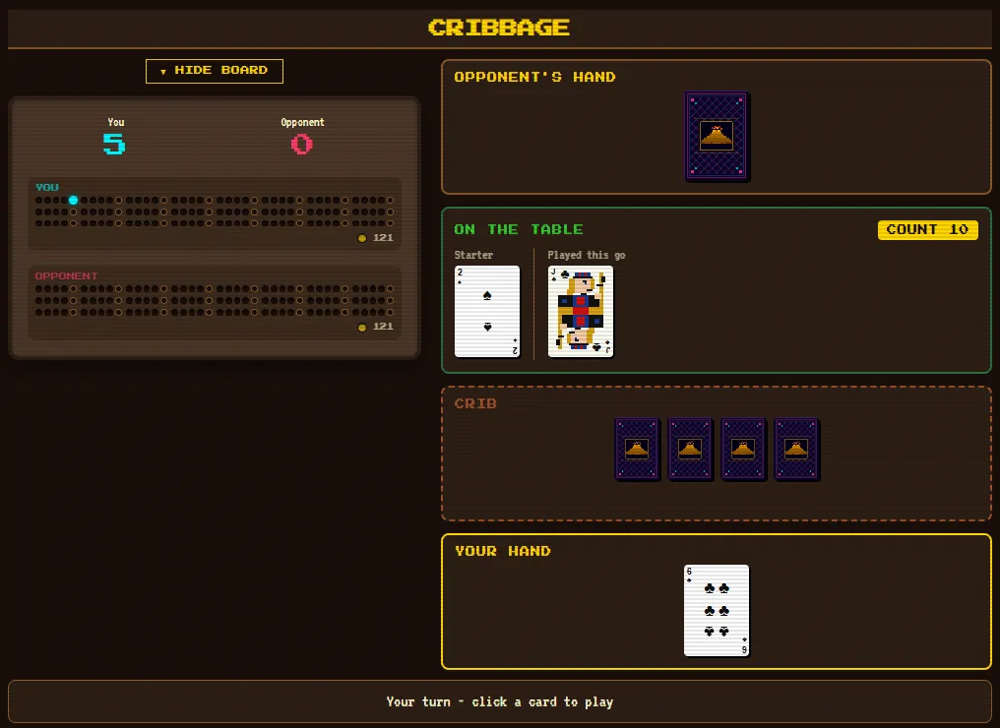
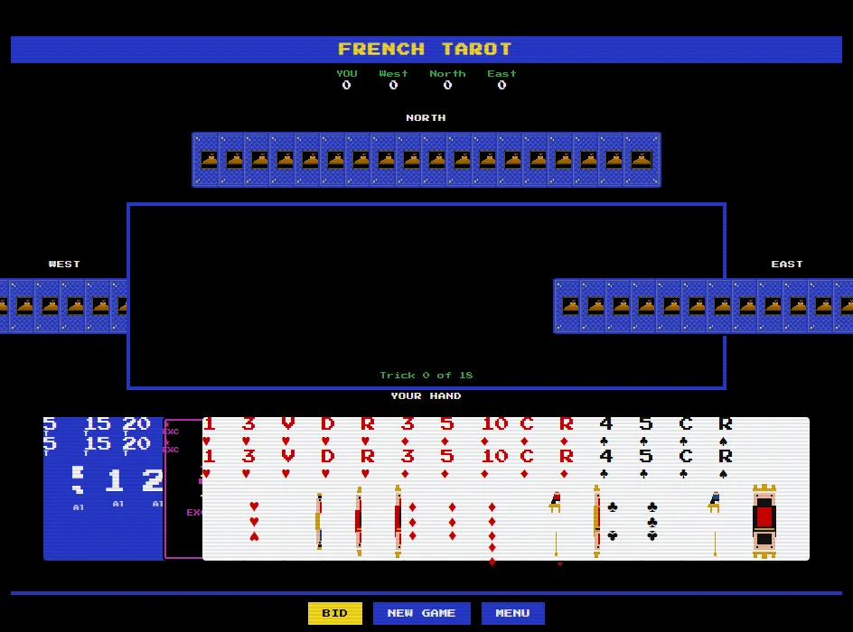
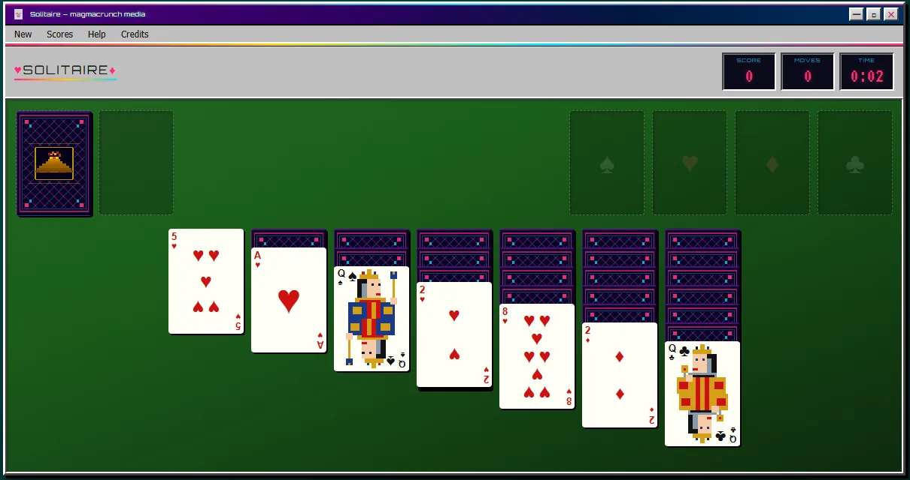

four card games · browser & terminal
Cribbage, Scandinavian stud, French tarot and Klondike solitaire, each at a table of its own. All four play free in the arcade with nothing to install, cribbage and stud online against friends too, and all four run in a terminal.

first to 121 · pegging, hands and the crib
Two-player cribbage against the computer or a friend, on a walnut peg board on green felt. A rules screen walks through the deal, the crib, the starter, pegging and scoring, and solo wins go on the arcade's high-score board.
pipx install magmacrunch-cribbage, then run cribbagecheapness impact factor 3.6

78-card deck · bidding · four players
You against three computer players, on a custom 78-card magmacrunch deck with a vaporwave card back. The bids keep their French names, Passe, Prise, Garde, Garde Sans and Garde Contre, beside English labels, and a hand runs through the bidding, the dog and eighteen tricks.
cheapness impact factor 3.0

draw 3 · timed scoring · top ten scores
Klondike, draw three, with timed scoring and a bonus that grows the faster you win. It is drawn like Windows 3.1 shareware in vaporwave colours: a silver chrome window on a teal desktop, neon pink and cyan on green felt, and a Miami sunset when you win.
original game Klondike, popular since the late 1800s. Inspired in part by Windows Solitaire (Wes Cherry, 1988; card art by Susan Kare), and not affiliated with Microsoft. · cheapness impact factor 1.6
New to pipx? The terminal arcade page walks through installing it. All four terminal versions are also in the magmacrunch terminal arcade.
versions by magmacrunch media